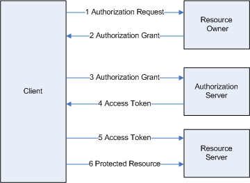
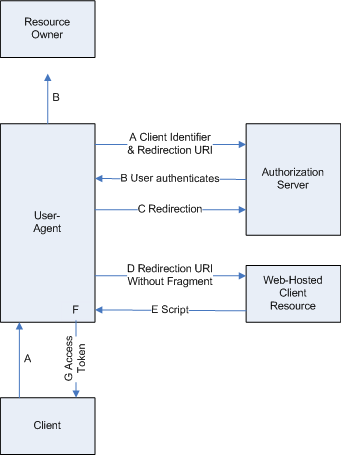

背景
在一个现有系统T中，需要提供数据给应用F，F没有自己的账号系统。因此，为了保持我方系统数据的安全性，采用OAuth2.0授权机制，以使F可以获取数据。
OAuth简介
OAuth解决的问题：
- 平台用户量大，资源丰富
- 新应用公信度低；用户不愿意注册
- 用户的信息资源在多个不同应用下，实现了“共享”
OAuth2.0的流程如图：

主要步骤:
- client向Resource owner发起Authorization Request。这个请求中，client会把预先在开放平台注册的client id告诉资源服务器，以表明自己的来源。另外，client也需要将数据访问权限发送给资源方
- Resource 返回Authorization Grant。这个批准中，会返回user code，verification code/URI
- client将grant发送到 Authorization server
- 如果授权服务器验证通过，返回Access Token
- client访问Resource Server并附上 token
- 资源服务器如果通过token的验证，就处理请求返回结果
以上是OAuth2.0的基本运作流程。为了便于理解，可以简化：
- 向平台提交门卡(client ID)，申请办理出入证
- 平台初步申核后，给你一些必要信息: verification/user Code, redirect URI
- 拿着这些信息，到平台的授权部办出入证
- 信息无误，得到出入证
- 凭借出入证，可以访问/修改权限允许下的资源
Implicit Grant
现在OAuth2.0已经成为业界主流，盛行于App和website。而当前开放平台都使用implicit grant的方式： 点击登录，弹出页面(通常是web网页)，上面会写清楚哪个应用访问哪些数据的信息，用户输入正确的帐号密码选择登录后，当前页面会重定向，token 就包含在这个链接后。取出token，并返回给当前App。我们的App也采用这种方式，implicit grant具体的流程如图：

各步骤说明：
a. client通过user-agent用户代理发起authorization授权请求, 发送的参数:client id, scope, redirection URI
b. 授权服务器通过用户代理告诉用户发起了某个授权，并等待用户响应
c. 用户同意后，授权服务器重定向到a中的URI，并加上access token
d. 用户代理向web-hosted client resource发起重定向；用户代理会在本地保存token
e. eb-hosted client resource返回一个网页，该网页能够获取到用户代理保存的token
f. 用户代理执行e中网页返回的脚本，获取到token
g. 用户代理返回token给client
引用
文中图片使用Visio制作，内容来源于：RFC 6749。